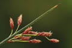

Diagnostic characters
Botany & morphology
Reproductive biology
Ecology
Distribution
Perennial, rhizomatous, stoloniferous herb; stem solitary, with hard rootstock and fibrous roots.
Leaves sheath-like, acuminate, membranous, hollow, 2.5-5cm long.
Inflorescence pseudolateral, simple, umbel like corymb.
Spikelets oblong-obovate, many flowered, pale-brown, 1.5 x 0.5cm.
Fruit nuts, brown, smooth, obovoid, planoconvex, apiculate.
Root stocks stout, hard, with fibrous roots.
Wind pollinated.
Frequent along muddy banks of tidal creeks in hinterlands of mangroves, this species play very important role in the fixation of silt or recently deposited sand. They are largely responsible for land gain and contribute to the filling up of the lagoon.
Throughout India especially occurs abundant in Cauvery delta. West Asia, and Africa. Sri Lanka, Persia, Central Asia, and Mediterranean region.
Top of the page